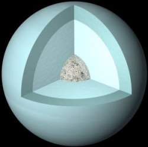

Uranus est la septième planète à partir du Soleil dans notre système solaire. Elle est une géante de glace, comme Neptune, Saturne et Jupiter. Uranus est la troisième plus grande planète du système solaire, avec un diamètre de 51 118 km, soit environ quatre fois celui de la Terre.
Uranus a été découverte en 1781 par l'astronome britannique William Herschel. Il a initialement pensé qu'il avait découvert une comète, mais après avoir observé l'objet pendant plusieurs semaines, il a réalisé qu'il s'agissait d'une nouvelle planète.
L'atmosphère d'Uranus est principalement constituée de méthane, ce qui lui donne sa couleur bleu-vert caractéristique. La haute atmosphère de la planète est connue pour ses vents violents qui soufflent jusqu'à 900 km/h. Uranus est également connue pour ses tempêtes, notamment la Grande Tache Sombre, qui est une tempête sombre et massive dans l'hémisphère sud de la planète